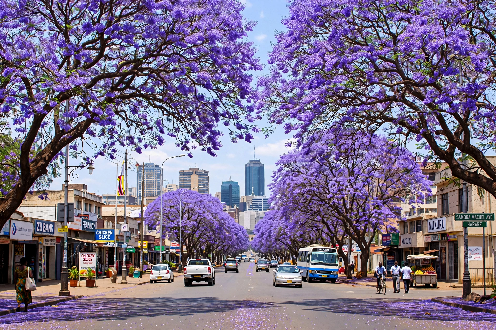

[Image placeholder: A jacaranda-lined avenue in Harare in October]| Country | Zimbabwe |
|---|---|
| Founded | 1890 as Salisbury |
| Population | About 1.5 million (city); metro over 2 million |
| Elevation | About 1,490 m |
| Former name | Salisbury (until 1982) |
**Harare** is the capital and most populous city of Zimbabwe, on the highveld plateau of the country's northeast. Founded in 1890 by the Pioneer Column of Cecil Rhodes's British South Africa Company as Fort Salisbury, it was capital of the self-governing colony of Southern Rhodesia, then of the Federation of Rhodesia and Nyasaland, then of UDI-era Rhodesia, and from 1980 of independent Zimbabwe; it was renamed Harare in 1982, after the Shona chief Neharawa (or from the word for 'he who does not sleep').
Once famed as one of Africa's most orderly and attractive capitals — avenues of flowering jacarandas, the 'Sunshine City' — Harare endured Zimbabwe's economic collapse of the 2000s: hyperinflation, cholera, power cuts and the 2005 Operation Murambatsvina slum clearances. It remains the country's commercial, cultural and educational centre, home to the University of Zimbabwe, the National Gallery and the vast Mbare market and bus terminus.
At nearly 1,500 m elevation, Harare's climate is mild year-round. Wealthy northern suburbs (Borrowdale, Mount Pleasant) contrast with dense high-density townships to the south and west. Lake Chivero supplies water and recreation.